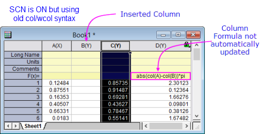

Beschränkung des Spaltenkurznamens
Column-Short-Names-Restrict
Seit der Version 2017 hat die Origin-Arbeitsmappe eine vereinfachte Zellennotation (SCN) unterstützt, ähnlich der Notation, die in MS Excel verwendet wird. Für Anwender von älteren Versionen von Origin gibt es einige wenige Dinge, die wichtig sind zu wissen:
- Der Zweck der SCN ist es, Spaltenformeln mit einer einfacheren, leicht lesbaren Syntax zu erstellen.
- SCN ist per Standard in allen neuen Mappen eingeschaltet.
- Wenn die SCN eingeschaltet ist, sind Spaltenkurznamen nicht bearbeitbar und können nicht neu geordnet werden, im Gegensatz zu dem, was Anwender möglicherweise noch von älteren Versionen der Software kennen.
- Wenn die vereinfachte Zellennotation aktiviert ist (Standard), werden Spaltenkurznamen entsprechend dem Spaltenindex, wie folgt, alphabetisch sortiert:
-
- A, B, …, Z, AA, BB, …, ZZ etc.
Wenn Sie Spalten in ein Arbeitsblatt einfügen bzw. innerhalb des Arbeitsblatts verschieben, sehen Sie, dass die Spaltenkurznamen alphabetisch neu geordnet sind.
Beim Schreiben der Spaltenformeln mit der neuen Syntax:
-
- A kann verwendet werden, um auf die Spalte mit dem Kurznamen "A" zu verweisen; entspricht der alten Syntax col(A),
- A1 kann verwendet werden, um auf die erste Zelle in Spalte A zu verweisen; entspricht der alten Syntax col(A)[1].
- [Book2]Sheet1!A kann verwendet werden, um auf die erste Spalte von Book2, Sheet1 zu verweisen, auch wenn diese sich nicht im aktuellen Arbeitsblatt befindet. Dies wird nur unterstützt, wenn die neue Zellennotation aktiviert ist.
Beachten Sie, dass die "alte" Syntax col/wcol noch verwendet werden kann, auch wenn einige der Vorteile der neuen Syntax nicht unterstützt werden. Wenn Sie zum Beispiel eine Arbeitsblattspalte vor einer Spalte mit Werten, die aus einer die alte Syntax verwendenden Formel in F(x)= oder Werte setzen, abgeleitet sind, einfügen, wird die Spaltenformel nicht automatisch aktualisiert, um die neue Spaltenanordnung widerzuspiegeln.
-
- 
|
Hinweis: Wenn Sie in der Spaltenformel über den Kurznamen auf eine Spalte verweisen:
- Der Kurzname muss auf höchstens 3 Zeichen begrenzt sein. Andernfalls können solche Spaltenreferenzen nicht erkannt werden. Verwenden Sie für Kurznamen, die 3 Zeichen überschreiten, die alten Referenzen col() oder wcol().
- Wenn Sie Funktionen mit Zeichenkettenparametern verwenden wie Token, sollten Sie doppelte Anführungszeichen statt einfachen verwenden.
|
 |
Beispiel 1
Geben Sie die folgende Excel entsprechende Formel in die Spaltenbeschriftungszeile F(x) ein:
A-abs(B)
um Spalte A minus die absoluten Werte von Spalte B zu berechnen.
Beispiel 2
Geben Sie die folgende Formel im Dialog Werte setzen ein:
B+A2
um Spalte B plus die zweite Zelle in Spalte A zu berechnen.
Beispiel 3
Geben Sie in der ersten Spalte von Book1, Sheet1 die folgende Formel in die Spaltenbeschriftungszeile F(x) ein:
[Book2]Sheet1!A+[Book2]Sheet1!B
, um Werte nach Daten in einer anderen Arbeitsmappe [Book2]Sheet1 festzulegen.
|
Wie bereits erwähnt, kann der Spaltenkurzname nicht bearbeitet werden, wenn die vereinfachte Zellennotation aktiviert ist.
|
Hinweis: Arbeitsmappen und Projekte, die die vereinfachte Notation verwenden, funktionieren nicht in Versionen vor Origin 2017.
|
Weitere Informationen zum Benennen von Spalten, die sich auf Berechnungen in Origin-Arbeitsblättern beziehen, finden Sie unter diesen Themen: